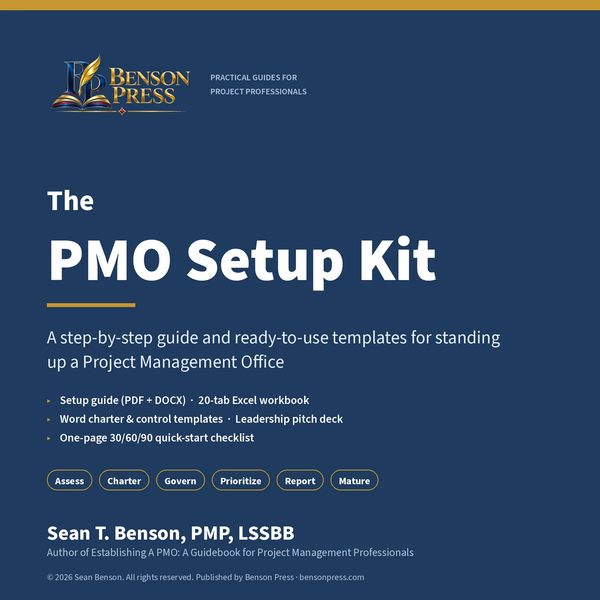
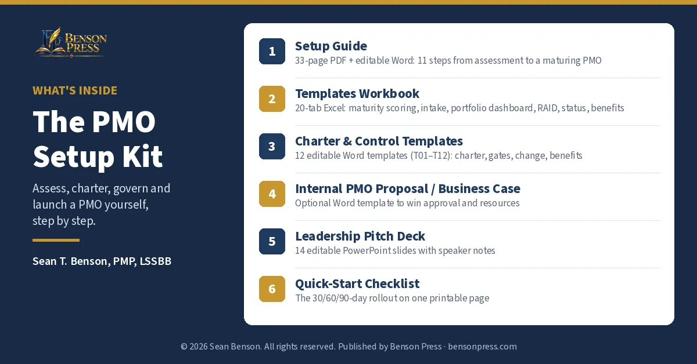

Do I need special software?
Microsoft Excel 2016 or later, Word and PowerPoint (or compatible apps). The workbook uses standard functions and also opens in Google Sheets and LibreOffice; check the formulas after importing.

Examples
From $89
Asked to set up a PMO, or fix one that lost credibility? The PMO Setup Kit walks you through it in 11 practical steps: assess your current maturity with evidence, choose the right PMO model, charter it, design services and governance, build intake and prioritization, set proportionate standards, report what matters, put guardrails on AI use, and roll out with a 30/60/90-day plan.
The kit includes a 33-page setup guide (PDF and editable Word), a 20-tab Excel workbook with working formulas (maturity self-assessment with scoring, intake scoring, portfolio dashboard, RAID log with heat map, status report, change control, benefits tracker and more), 12 editable charter and control templates, an internal PMO proposal and business case template, a 14-slide leadership pitch deck, and a one-page quick-start checklist.
Written by Sean T. Benson, PMP, LSSBB: 21-year Marine Corps veteran, former Director of IT PMO at Palomar Health, and university professor.
These pages show examples. The kit is not for sale yet, and the full files are not available to download.
Examples
Select an image to open it. Arrow keys move through the examples. Escape, Close, or a click outside closes them.
Preview screenshots of the workbook use fictional example data for "Harborview Regional Services," a made-up organization, and are labeled that way on each image.
What's inside

The files below are the contents of the kit. They are not available to download from this page.
Setup Guide, 33 pages
About the author; how to use the kit; Steps 1–11 (assess, choose a model, charter, operating model and services, governance, intake and prioritization, standards and tailoring, reporting and benefits, AI guardrails, 30/60/90 rollout, maturing the PMO); a templates map; discovery questions; reference basis. Editable Word version included.
Templates Workbook, 20 tabs
Instructions, Maturity Assessment, Maturity Summary, PMO Charter, Governance & RACI, Scoring Weights, Intake & Prioritization, Portfolio Register, Portfolio Dashboard, RAID Log, Status Report, Change Control, Benefits Tracker, Decision Log, Stage Gates, KPI Catalog, Capacity, AI Use Register, 30-60-90 Plan, Lists. Working formulas, dropdowns, conditional formatting and charts; light, clearly marked example rows.
12 Word templates
T01 PMO charter · T02 service catalog and service levels · T03 discovery and evidence request · T04 investment case · T05 portfolio council charter and decision record · T06 stage gate approval · T07 risk and issue escalation · T08 change request · T09 benefits plan and transition · T10 portfolio data dictionary · T11 AI use-case review · T12 launch readiness and acceptance.
Optional proposal template, 6 pages
Decision requested, evidence, outcomes, model and scope, first services, rollout, deliverables and acceptance, resources and cost, risks, approvals, and a stakeholder interview guide.
14 editable slides
Why now, maturity baseline, what the PMO will do, model, first services, governance, intake, standards and gates, KPIs, 90-day plan, the ask, risks, decision and next steps. Speaker notes on every slide.
1 page
The 30/60/90-day plan as a printable checklist with done-when milestones, post-launch checks and eight ground rules.
Audience
It suits organizations running predictive, agile or hybrid projects. It is not a certification course or a substitute for legal, financial or compliance advice.
FAQ
Microsoft Excel 2016 or later, Word and PowerPoint (or compatible apps). The workbook uses standard functions and also opens in Google Sheets and LibreOffice; check the formulas after importing.
Both. The maturity self-assessment tells you where to start. If you're resetting a PMO, you'll likely move through Steps 1–4 faster and spend more time on governance, intake and reporting.
The rollout plan is built around 90 days for a PMO serving one department or a modest portfolio. A PMO spanning several business units or system integrations often needs 16 weeks or more. The guide tells you how to stretch the phases without skipping them.
It is informed by public PMI guidance (including the PMBOK® Guide, Eighth Edition, and PMI's PMO practice guide) and the NIST AI Risk Management Framework. It is an independent work, not a PMI product, and it doesn't reproduce copyrighted standards.
Yes. Every file is editable, and you can use and adapt the templates inside your own organization. You may not resell or redistribute them. For a team or a whole organization, see the Team and Enterprise licenses.
Yes. The guide covers how to right-size the model, combine governance forums and start with only three to five services.
Sample
Free sample, 7 pages, watermarked: guide cover, contents, all of Step 6 (intake and prioritization), template T01 PMO Charter, a workbook screenshot page with fictional example data, and a what's-in-the-full-kit page.